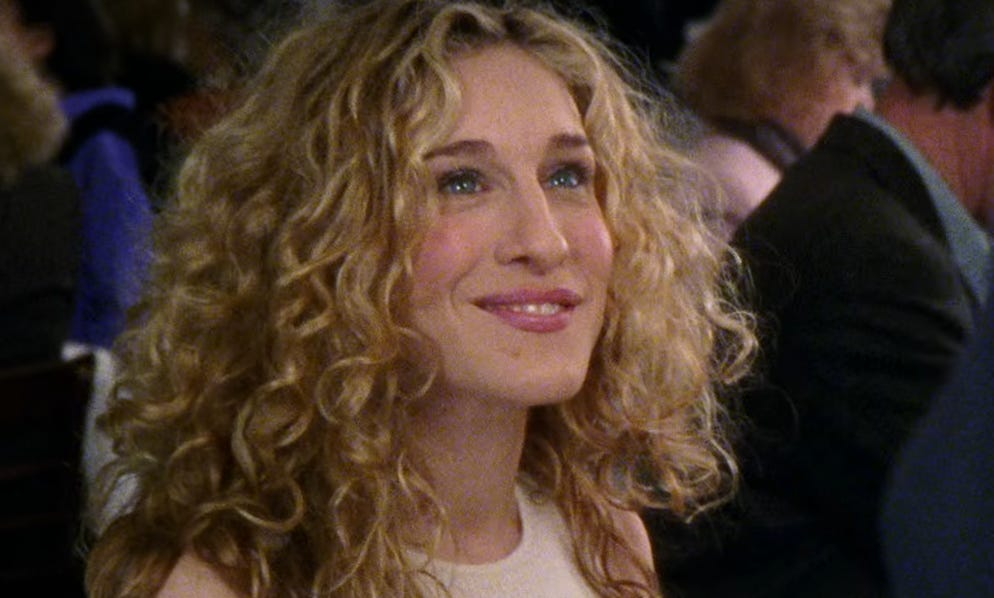

Carrie Bradshaw
New York, NY
cbbradshaw@email.com | (555) 123-4567 | LinkedIn

Professional Summary
Creative and insightful writer with a passion for storytelling, relationships, and fashion. Experienced columnist, author, and media personality with a keen ability to analyze modern love, culture, and trends. Adept at creating compelling content that engages audiences and sparks conversation. Skilled in writing, interviewing, and trend forecasting.
Professional Experience
Sex and the City Columnist
New York Star, New York, NY 1996 – 2004
- Wrote a widely popular weekly column, Sex and the City, exploring relationships, dating, and modern romance with wit and charm.
- Developed a loyal readership through engaging personal narratives and sharp cultural commentary.
- Conducted interviews and research to provide fresh insights into dating and social trends.
- Collaborated with publishers and media outlets to expand brand visibility.
Freelance Writer & Author
Various Publications & Personal Projects 2004 – Present
- Published the bestselling book Sex and the City, which inspired a major television series and film adaptations.
- Contributed essays and articles to prominent magazines, including Vogue.
- Developed and pitched creative concepts for new editorial projects, blending fashion, relationships, and personal experiences.
Fashion Contributor & Media Personality
Guest Appearances & Collaborations
- Provided fashion commentary and insight at high-profile events and publications.
- Established a reputation as a style icon, inspiring audiences with bold and trendsetting outfits.
- Participated in television and podcast interviews discussing modern dating, relationships, and cultural trends.
Skills
- Creative Writing & Storytelling
- Column & Feature Writing
- Relationship & Lifestyle Journalism
- Fashion & Trend Analysis
- Public Speaking & Media Appearances
- Social Media Engagement
- Interviewing & Research
Education
Bachelor of Arts in Journalism
New York University, New York
Masters of Arts in Creative Writing
Columbia University, New York
Personal Interests
- Fashion
- Cosmopolitans
- Shoe Collecting (Specifically Manolo Blahniks)
- Love & Relationships
- Exploring NYC
References
Available upon request (or ask Miranda, Charlotte, or Samantha).